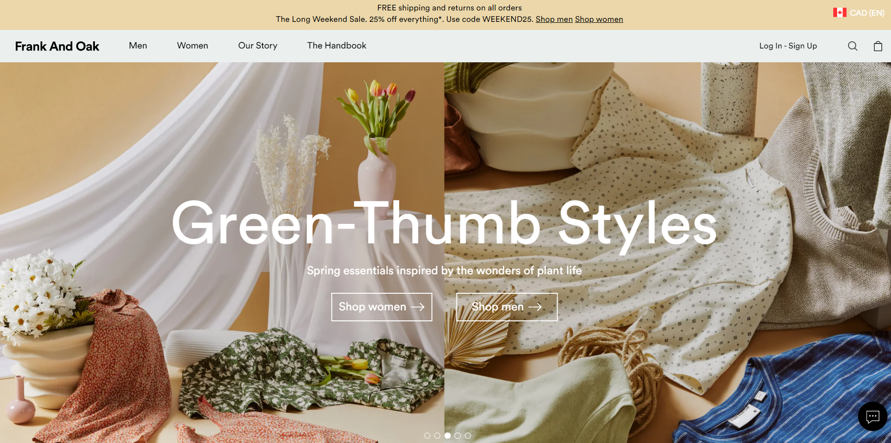

Let us know down below!
Shown below is a photo of Frank And Oak's homepage.
Click the photo to visit the site, test out the UI by finding a piece you like, adding it to your cart,
visiting the checkout, and then come back here to answer the survey questions below. Your feedback is
important to us & we appreciate your time.

How confident are you with online browsing, shopping or other
shopping-related tasks?